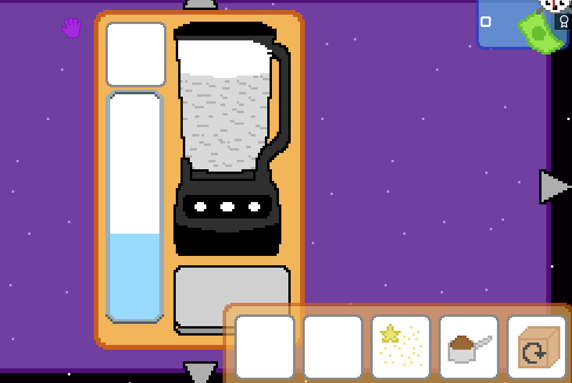
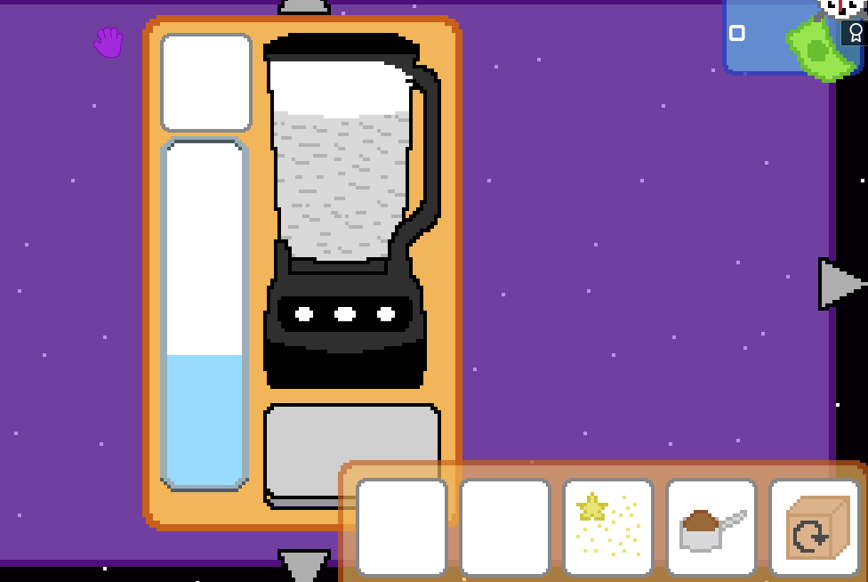

About Me
Hello! My name is Manny Fluss. I am a graduate of the University of California, Santa Cruz with a Bachelor's in Computer Science and Game Design. Solving problems and being creative with coding are my passions. Outside of coding, my hobbies include playing video games, traveling, surfing, and speaking Spanish.


 
